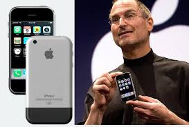

В Україні компанія Apple представлена офіційною техпідтримкою (телефон та чат), яка надає допомогу щодо
пристроїв та послуг, та через дистриб'юторів, які реалізують продукцію через авторизованих рітейлерів, таких як
iSpace, Comfy, Allo та інші. Хоча офіційних магазинів Apple Store в Україні немає, придбати оригінальні пристрої
можна в мережах офіційних партнерів, а для отримання допомоги слід звертатися до офіційної служби підтримки або
дистриб'юторів.
История «Айфона» началась 9 января 2007 года, когда Стив Джобс представил первый смартфон Apple. iPhone 2G поступил
в продажу 29 июня 2007 года, а в 2010 году операционная система iPhone OS была переименована в iOS. Каждый год Apple
выпускала новую, усовершенствованную модель, добавляя новые функции, такие как поддержка сетей 3G, голосовое управление (Siri),
технологии распознавания лиц (Face ID) и Apple Pay.

обміняй старий прилад на новий